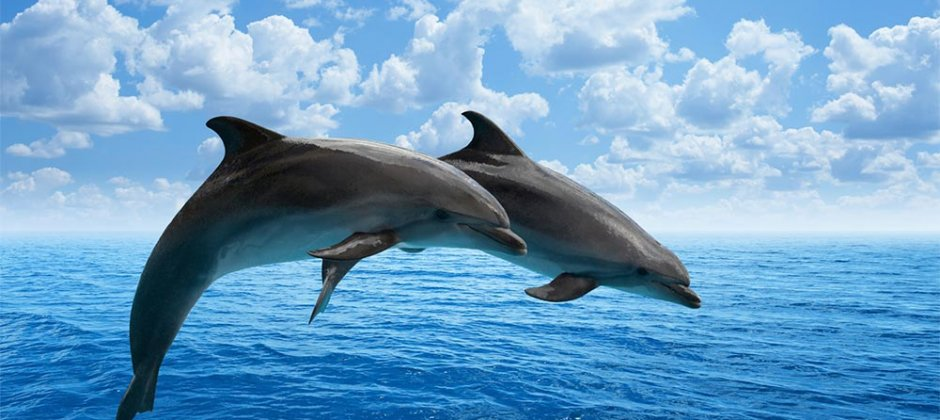

- Dolphins are part of the family of whales that includes orcas and pilot whales. Killer whales are actually dolphins.
- Dolphins have excellent eyesight and hearing as well as the ability to use echolocation for finding the exact location of objects.
- Dolphins communicate with each other by clicking, whistling and other sounds.
- Dolphins have two stomachs. One is used for storage of food and the other is used for digestion.
- Dolphins can dive up to 1000 feet
- Dolphins can live up to 50 years old
- There are about 40 different species of dolphins